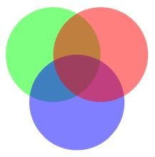

Annot¶
Quote from the Adobe PDF References: “An annotation associates an object such as a note, sound, or movie with a location on a page of a PDF document, or provides a way to interact with the user by means of the mouse and keyboard.”
There is a parent-child relationship between an annotation and its page. If the page object becomes unusable (closed document, any document structure change, etc.), then so does every of its existing annotation objects – an exception is raised saying that the object is “orphaned”, whenever an annotation property or method is accessed.
Attribute |
Short Description |
|---|---|
delete all responding annotations |
|
get attached file content |
|
image of the annotation as a pixmap |
|
get the sound of an audio annotation |
|
extract annotation text |
|
extract annotation text |
|
set annotation’s border properties |
|
set annotation’s blend mode |
|
set annotation’s colors |
|
set annotation’s flags field |
|
define the annotation to being “In Response To” |
|
set annotation’s name field |
|
change transparency |
|
open / close annotation or its Popup |
|
create a Popup for the annotation |
|
change annotation rectangle |
|
change rotation |
|
update attached file content |
|
apply accumulated annot changes |
|
annotation BlendMode |
|
border details |
|
border / background and fill colors |
|
get attached file information |
|
annotation flags |
|
whether annotation has a Popup |
|
annotation to which this one responds |
|
various information |
|
whether annotation or its Popup is open |
|
start / end appearance of line-type annotations |
|
link to the next annotation |
|
the annot’s transparency |
|
page object of the annotation |
|
rectangle of the annotation’s Popup |
|
the PDF |
|
rectangle containing the annotation |
|
type of the annotation |
|
point coordinates of Polygons, PolyLines, etc. |
|
the PDF |
Class API
- class Annot¶
- get_pixmap(matrix=pymupdf.Identity, dpi=None, colorspace=pymupdf.csRGB, alpha=False)¶
Changed in v1.19.2: added support of dpi parameter.
Creates a pixmap from the annotation as it appears on the page in untransformed coordinates. The pixmap’s IRect equals Annot.rect.irect (see below). All parameters are keyword only.
- Parameters:
matrix (matrix_like) – a matrix to be used for image creation. Default is Identity.
dpi (int) – (new in v1.19.2) desired resolution in dots per inch. If not
None, the matrix parameter is ignored.colorspace (Colorspace) – a colorspace to be used for image creation. Default is pymupdf.csRGB.
alpha (bool) – whether to include transparency information. Default is False.
- Return type:
Note
If the annotation has just been created or modified, you should
Document.reload_page()the page first viapage = doc.reload_page(page).The pixmap will have “premultiplied” pixels if
alpha=True. To learn about some background, e.g. look for “Premultiplied alpha” here.
- get_text(opt, clip=None, flags=None)¶
New in 1.18.0
Retrieves the content of the annotation in a variety of formats – much like the same method for Page.. This currently only delivers relevant data for annotation types ‘FreeText’ and ‘Stamp’. Other types return an empty string (or equivalent objects).
- Parameters:
opt (str) –
(positional only) the desired format - one of the following values. Please note that this method works exactly like the same-named method of Page.
”text” –
TextPage.extractTEXT(), default”blocks” –
TextPage.extractBLOCKS()”words” –
TextPage.extractWORDS()”html” –
TextPage.extractHTML()”xhtml” –
TextPage.extractXHTML()”xml” –
TextPage.extractXML()”dict” –
TextPage.extractDICT()”json” –
TextPage.extractJSON()”rawdict” –
TextPage.extractRAWDICT()
clip (rect-like) – (keyword only) restrict the extraction to this area. Should hardly ever be required, defaults to
Annot.rect.flags (int) – (keyword only) control the amount of data returned. Defaults to simple text extraction.
- get_textbox(rect)¶
New in 1.18.0
Return the annotation text. Mostly (except line breaks) equal to
Annot.get_text()with the “text” option.- Parameters:
rect (rect-like) – the area to consider, defaults to
Annot.rect.
- set_info(info=None, content=None, title=None, creationDate=None, modDate=None, subject=None)¶
Changed in version 1.16.10
Changes annotation properties. These include dates, contents, subject and author (title). Changes for name and id will be ignored. The update happens selectively: To leave a property unchanged, set it to None. To delete existing data, use an empty string.
- Parameters:
info (dict) – a dictionary compatible with the info property (see below). All entries must be strings. If this argument is not a dictionary, the other arguments are used instead – else they are ignored.
content (str) – (new in v1.16.10) see description in
info.title (str) – (new in v1.16.10) see description in
info.creationDate (str) – (new in v1.16.10) date of annot creation. If given, should be in PDF datetime format.
modDate (str) – (new in v1.16.10) date of last modification. If given, should be in PDF datetime format.
subject (str) – (new in v1.16.10) see description in
info.
- set_line_ends(start, end)¶
Sets an annotation’s line ending styles. Each of these annotation types is defined by a list of points which are connected by lines. The symbol identified by start is attached to the first point, and end to the last point of this list. For unsupported annotation types, a no-operation with a warning message results.
Note
While ‘FreeText’, ‘Line’, ‘PolyLine’, and ‘Polygon’ annotations can have these properties, (Py-) MuPDF does not support line ends for ‘FreeText’, because the call-out variant of it is not supported.
(Changed in v1.16.16) Some symbols have an interior area (diamonds, circles, squares, etc.). By default, these areas are filled with the fill color of the annotation. If this is None, then white is chosen. The fill_color argument of
Annot.update()can now be used to override this and give line end symbols their own fill color.
- Parameters:
start (int) – The symbol number for the first point.
end (int) – The symbol number for the last point.
- set_oc(xref)¶
Set the annotation’s visibility using PDF optional content mechanisms. This visibility is controlled by the user interface of supporting PDF viewers. It is independent from other attributes like
Annot.flags.- Parameters:
xref (int) – the
xrefof an optional contents group (OCG or OCMD). Any previous xref will be overwritten. If zero, a previous entry will be removed. An exception occurs if the xref is not zero and does not point to a valid PDF object.
Note
This does not require executing
Annot.update()to take effect.
- get_oc()¶
Return the
xrefof an optional content object, or zero if there is none.- Returns:
zero or the xref of an OCG (or OCMD).
- set_irt_xref(xref)¶
New in v1.19.3
Set annotation to be “In Response To” another one.
- set_open(value)¶
New in v1.18.4
Set the annotation’s Popup annotation to open or closed – or the annotation itself, if its type is ‘Text’ (“sticky note”).
- Parameters:
value (bool) – the desired open state.
- set_popup(rect)¶
New in v1.18.4
Create a Popup annotation for the annotation and specify its rectangle. If the Popup already exists, only its rectangle is updated.
- Parameters:
rect (rect_like) – the desired rectangle.
- set_opacity(value)¶
Set the annotation’s transparency. Opacity can also be set in
Annot.update().- Parameters:
value (float) – a float in range [0, 1]. Any value outside is assumed to be 1. E.g. a value of 0.5 sets the transparency to 50%.
Three overlapping ‘Circle’ annotations with each opacity set to 0.5:

- blendmode¶
New in v1.18.4
The annotation’s blend mode. See Adobe PDF References, page 324 for explanations.
- Return type:
str
- Returns:
the blend mode or None.
- set_blendmode(blendmode)¶
New in v1.16.14
Set the annotation’s blend mode. See Adobe PDF References, page 324 for explanations. The blend mode can also be set in
Annot.update().- Parameters:
blendmode (str) – set the blend mode. Use
Annot.update()to reflect this in the visual appearance. For predefined values see PDF Standard Blend Modes. UsePDF_BM_Normalto remove a blend mode.
- set_name(name)¶
New in version 1.16.0
Change the name field of any annotation type. For ‘FileAttachment’ and ‘Text’ annotations, this is the icon name, for ‘Stamp’ annotations the text in the stamp. The visual result (if any) depends on your PDF viewer. See also Annotation Icons in MuPDF.
- Parameters:
name (str) – the new name.
Caution
If you set the name of a ‘Stamp’ annotation, then this will not change the rectangle, nor will the text be layouted in any way. If you choose a standard text from Stamp Annotation Icons (the exact name piece after
"STAMP_"), you should receive the original layout. An arbitrary text will not be changed to upper case, but be written in font “Times-Bold” as is, horizontally centered in one line and be shortened to fit. To get your text fully displayed, its length usingfontsize20 must not exceed 190 points. So please make sure that the following inequality is true:pymupdf.get_text_length(text, fontname="tibo", fontsize=20) <= 190.
- set_rect(rect)¶
Change the rectangle of an annotation. The annotation can be moved around and both sides of the rectangle can be independently scaled. However, the annotation appearance will never get rotated, flipped or sheared. This method only affects certain annotation types [2] and will lead to a message on Python’s
sys.stderrin other cases. No exception will be raised, butFalsewill be returned.- Parameters:
rect (rect_like) – the new rectangle of the annotation (finite and not empty). E.g. using a value of annot.rect + (5, 5, 5, 5) will shift the annot position 5 pixels to the right and downwards.
Note
You need not invoke
Annot.update()for activation of the effect.
- set_rotation(angle)¶
Set the rotation of an annotation. This rotates the annotation rectangle around its center point. Then a new annotation rectangle is calculated from the resulting quad.
- Parameters:
angle (int) – rotation angle in degrees. Arbitrary values are possible, but will be clamped to the interval
[0, 360).
Note
You must invoke
Annot.update()to activate the effect.For PDF_ANNOT_FREE_TEXT, only one of the values 0, 90, 180 and 270 is possible and will rotate the text inside the current rectangle (which remains unchanged). Other values are silently ignored and replaced by 0.
Otherwise, only the following Annotation Types can be rotated: ‘Square’, ‘Circle’, ‘Caret’, ‘Text’, ‘FileAttachment’, ‘Ink’, ‘Line’, ‘Polyline’, ‘Polygon’, and ‘Stamp’. For all others the method is a no-op.
- set_border(border=None, width=None, style=None, dashes=None, clouds=None)¶
Changed in version 1.16.9: Allow specification without using a dictionary. The direct parameters are used if border is not a dictionary.
Changed in version 1.22.5: Support of the “cloudy” border effect.
PDF only: Change border width, dashing, style and cloud effect. See the
Annot.borderattribute for more details.- Parameters:
border (dict) – a dictionary as returned by the
borderproperty, with keys “width” (float), “style” (str), “dashes” (sequence) and clouds (int). Omitted keys will leave the resp. property unchanged. Set the border argument toNone(the default) to use the other arguments.width (float) – A non-negative value will change the border line width.
style (str) – A value other than
Nonewill change this border property.dashes (sequence) – All items of the sequence must be integers, otherwise the parameter is ignored. To remove dashing use:
dashes=[]. If dashes is a non-empty sequence, “style” will automatically be set to “D” (dashed).clouds (int) – A value >= 0 will change this property. Use
clouds=0to remove the cloudy appearance completely. Only annotation types ‘Square’, ‘Circle’, and ‘Polygon’ are supported with this property.
- set_flags(flags)¶
Changes the annotation flags. Use the
|operator to combine several.- Parameters:
flags (int) – an integer specifying the required flags.
- set_colors(colors=None, stroke=None, fill=None)¶
Changed in version 1.16.9: Allow colors to be directly set. These parameters are used if colors is not a dictionary.
Changes the “stroke” and “fill” colors for supported annotation types – not all annotations accept both.
- Parameters:
colors (dict) – a dictionary containing color specifications. For accepted dictionary keys and values see below. The most practical way should be to first make a copy of the colors property and then modify this dictionary as required.
stroke (sequence) – see above.
fill (sequence) – see above.
Changed in v1.18.5: To completely remove a color specification, use an empty sequence like
[]. If you specifyNone, an existing specification will not be changed.
- delete_responses()¶
New in version 1.16.12
Delete annotations referring to this one. This includes any ‘Popup’ annotations and all annotations responding to it.
- update(opacity=None, blend_mode=None, fontsize=0, text_color=None, border_color=None, fill_color=None, cross_out=True, rotate=-1)¶
Synchronize the appearance of an annotation with its properties after relevant changes.
You can safely omit this method only for the following changes:
Annot.set_info()(except any changes to “content”)
All arguments are optional. (Changed in v1.16.14) Blend mode and opacity are applicable to all annotation types. The other arguments are mostly special use, as described below.
Color specifications may be made in the usual format used in PuMuPDF as sequences of floats ranging from 0.0 to 1.0 (including both). The sequence length must be 1, 3 or 4 (supporting GRAY, RGB and CMYK colorspaces respectively). For GRAY, just a float is also acceptable.
- Parameters:
opacity (float) – (new in v1.16.14) valid for all annotation types: change or set the annotation’s transparency. Valid values are 0 <= opacity < 1.
blend_mode (str) – (new in v1.16.14) valid for all annotation types: change or set the annotation’s blend mode. For valid values see PDF Standard Blend Modes.
fontsize (float) – change
fontsizeof the text. ‘FreeText’ annotations only.text_color (sequence,float) – change the text color. ‘FreeText’ annotations only.
border_color (sequence,float) – change the border color. ‘FreeText’ annotations only.
fill_color (sequence,float) –
the fill color.
’Line’, ‘Polyline’, ‘Polygon’ annotations: use it to give applicable line end symbols a fill color other than that of the annotation (changed in v1.16.16).
cross_out (bool) – (new in v1.17.2) add two diagonal lines to the annotation rectangle. ‘Redact’ annotations only. If not desired, False must be specified even if the annotation was created with False.
rotate (int) – new rotation value. Default (-1) means no change. Supports ‘FreeText’ and several other annotation types (see
Annot.set_rotation()), [1]. Only choose 0, 90, 180, or 270 degrees for ‘FreeText’. Otherwise any integer is acceptable.
- Return type:
bool
Note
Using this method inside a
Page.annots()loop is not recommended! This is because most annotation updates require the owning page to be reloaded – which cannot be done inside this loop. Please use the example coding pattern given in the documentation of this generator.
- file_info¶
Basic information of the annot’s attached file.
- Return type:
dict
- Returns:
a dictionary with keys filename, ufilename, desc (description), size (uncompressed file size), length (compressed length) for FileAttachment annot types, else None.
- get_file()¶
Returns attached file content.
- Return type:
bytes
- Returns:
the content of the attached file.
- update_file(buffer=None, filename=None, ufilename=None, desc=None)¶
Updates the content of an attached file. All arguments are optional. No arguments lead to a no-op.
- Parameters:
buffer (bytes|bytearray|BytesIO) –
the new file content. Omit to only change meta-information.
(Changed in version 1.14.13) io.BytesIO is now also supported.
filename (str) – new filename to associate with the file.
ufilename (str) – new unicode filename to associate with the file.
desc (str) – new description of the file content.
- get_sound()¶
Return the embedded sound of an audio annotation.
- Return type:
dict
- Returns:
the sound audio file and accompanying properties. These are the possible dictionary keys, of which only “rate” and “stream” are always present.
Key
Description
rate
(float, requ.) samples per second
channels
(int, opt.) number of sound channels
bps
(int, opt.) bits per sample value per channel
encoding
(str, opt.) encoding format: Raw, Signed, muLaw, ALaw
compression
(str, opt.) name of compression filter
stream
(bytes, requ.) the sound file content
- opacity¶
The annotation’s transparency. If set, it is a value in range [0, 1]. The PDF default is 1. However, in an effort to tell the difference, we return -1.0 if not set.
- Return type:
float
- rotation¶
The annot rotation.
- Return type:
int
- Returns:
a value [-1, 359]. If rotation is not at all, -1 is returned (and implies a rotation angle of 0). Other possible values are normalized to some value value 0 <= angle < 360.
- next¶
The next annotation on this page or None.
- Return type:
Annot
- type¶
A number and one or two strings describing the annotation type, like [2, ‘FreeText’, ‘FreeTextCallout’]. The second string entry is optional and may be empty. See the appendix Annotation Types for a list of possible values and their meanings.
- Return type:
list
- info¶
A dictionary containing various information. All fields are optional strings. For information items not provided, an empty string is returned.
name – e.g. for ‘Stamp’ annotations it will contain the stamp text like “Sold” or “Experimental”, for other annot types you will see the name of the annot’s icon here (“PushPin” for FileAttachment).
content – a string containing the text for type Text and FreeText annotations. Commonly used for filling the text field of annotation pop-up windows.
title – a string containing the title of the annotation pop-up window. By convention, this is used for the annotation author.
creationDate – creation timestamp.
modDate – last modified timestamp.
subject – subject.
id – (new in version 1.16.10) a unique identification of the annotation. This is taken from PDF key /NM. Annotations added by PyMuPDF will have a unique name, which appears here.
- Return type:
dict
- flags¶
An integer whose low order bits contain flags for how the annotation should be presented.
- Return type:
int
- line_ends¶
A pair of integers specifying start and end symbol of annotations types ‘FreeText’, ‘Line’, ‘PolyLine’, and ‘Polygon’. None if not applicable. For possible values and descriptions in this list, see the Adobe PDF References, table 1.76 on page 400.
- Return type:
tuple
- vertices¶
A list containing a variable number of point (“vertices”) coordinates (each given by a pair of floats) for various types of annotations:
‘Line’ – the starting and ending coordinates (2 float pairs).
‘FreeText’ – 2 or 3 float pairs designating the starting, the (optional) knee point, and the ending coordinates.
‘PolyLine’ / ‘Polygon’ – the coordinates of the edges connected by line pieces (n float pairs for n points).
text markup annotations – 4 float pairs specifying the QuadPoints of the marked text span (see Adobe PDF References, page 403).
‘Ink’ – list of one to many sublists of vertex coordinates. Each such sublist represents a separate line in the drawing.
- Return type:
list
- colors¶
dictionary of two lists of floats in range 0 <= float <= 1 specifying the “stroke” and the interior (“fill”) colors. The stroke color is used for borders and everything that is actively painted or written (“stroked”). The fill color is used for the interior of objects like line ends, circles and squares. The lengths of these lists implicitly determine the colorspaces used: 1 = GRAY, 3 = RGB, 4 = CMYK. So “[1.0, 0.0, 0.0]” stands for RGB color red. Both lists can be empty if no color is specified.
- Return type:
dict
- irt_xref¶
The PDF
xrefof an annotation to which this one responds. Return zero if this is no response annotation.- Return type:
int
- has_popup¶
Whether the annotation has a Popup annotation.
- Return type:
bool
- is_open¶
Whether the annotation’s Popup is open – or the annotation itself (‘Text’ annotations only).
- Return type:
bool
- popup_rect¶
The rectangle of the associated Popup annotation. Infinite rectangle if non-existent.
- Return type:
- rect_delta¶
A tuple of four floats representing the
/RDentry of the annotation. The four numbers describe the numerical differences (left, top, -right, -bottom) between two rectangles: therectof the annotation and a rectangle contained within that rectangle. If the entry is missing, this property is(0, 0, 0, 0). If the annotation border is a normal, straight line, these numbers are typically border width divided by 2. If the annotation has a “cloudy” border, you will see the breadth of the cloud semi-circles here. In general, the numbers need not be identical. To compute the inner rectangle doa.rect + a.rect_delta.
- border¶
A dictionary containing border characteristics. Empty if no border information exists. The following keys may be present:
width – a float indicating the border thickness in points. The value is -1.0 if no width is specified.
dashes – a sequence of integers specifying a line dashing pattern. [] means no dashes, [n] means equal on-off lengths of n points, longer lists will be interpreted as specifying alternating on-off length values. See the Adobe PDF References page 126 for more details.
style – 1-byte border style: “S” (Solid) = solid line surrounding the annotation, “D” (Dashed) = dashed line surrounding the annotation, the dash pattern is specified by the dashes entry, “B” (Beveled) = a simulated embossed rectangle that appears to be raised above the surface of the page, “I” (Inset) = a simulated engraved rectangle that appears to be recessed below the surface of the page, “U” (Underline) = a single line along the bottom of the annotation rectangle.
clouds – an integer indicating a “cloudy” border, where
nis an integer-1 <= n <= 2. A valuen = 0indicates a straight line (no clouds), 1 means small and 2 means large semi-circles, mimicking the cloudy appearance. If -1, then no specification is present.
- Return type:
dict
Annotation Icons in MuPDF¶
This is a list of icons referenceable by name for annotation types ‘Text’ and ‘FileAttachment’. You can use them via the icon parameter when adding an annotation, or use the as argument in Annot.set_name(). It is left to your discretion which item to choose when – no mechanism will keep you from using e.g. the “Speaker” icon for a ‘FileAttachment’.
Example¶
Change the graphical image of an annotation. Also update the “author” and the text to be shown in the popup window:
doc = pymupdf.open("circle-in.pdf")
page = doc[0] # page 0
annot = page.first_annot # get the annotation
annot.set_border(dashes=[3]) # set dashes to "3 on, 3 off ..."
# set stroke and fill color to some blue
annot.set_colors({"stroke":(0, 0, 1), "fill":(0.75, 0.8, 0.95)})
info = annot.info # get info dict
info["title"] = "Jorj X. McKie" # set author
# text in popup window ...
info["content"] = "I changed border and colors and enlarged the image by 20%."
info["subject"] = "Demonstration of PyMuPDF" # some PDF viewers also show this
annot.set_info(info) # update info dict
r = annot.rect # take annot rect
r.x1 = r.x0 + r.width * 1.2 # new location has same top-left
r.y1 = r.y0 + r.height * 1.2 # but 20% longer sides
annot.set_rect(r) # update rectangle
annot.update() # update the annot's appearance
doc.save("circle-out.pdf") # save
This is how the circle annotation looks like before and after the change (pop-up windows displayed using Nitro PDF viewer):
Footnotes